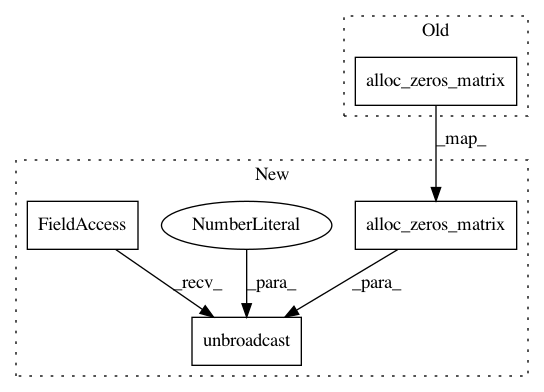

5e2b9358d6741840f3b86adbaf4f5ac8a99ea9ee,keras/layers/recurrent.py,GRU,get_output,#GRU#Any#,226
Before Change
outputs, updates = theano.scan(
self._step,
sequences=[x_z, x_r, x_h],
outputs_info=alloc_zeros_matrix(X.shape[1], self.output_dim),
non_sequences=[self.U_z, self.U_r, self.U_h],
truncate_gradient=self.truncate_gradient
)
After Change
outputs, updates = theano.scan(
self._step,
sequences=[x_z, x_r, x_h],
outputs_info=T.unbroadcast(alloc_zeros_matrix(X.shape[1], self.output_dim), 1),
non_sequences=[self.U_z, self.U_r, self.U_h],
truncate_gradient=self.truncate_gradient
)
In pattern: SUPERPATTERN
Frequency: 3
Non-data size: 4
Instances
Project Name: keras-team/keras
Commit Name: 5e2b9358d6741840f3b86adbaf4f5ac8a99ea9ee
Time: 2015-05-26
Author: francois.chollet@gmail.com
File Name: keras/layers/recurrent.py
Class Name: GRU
Method Name: get_output
Project Name: keras-team/keras
Commit Name: 5e2b9358d6741840f3b86adbaf4f5ac8a99ea9ee
Time: 2015-05-26
Author: francois.chollet@gmail.com
File Name: keras/layers/recurrent.py
Class Name: LSTM
Method Name: get_output
Project Name: keras-team/keras
Commit Name: 5e2b9358d6741840f3b86adbaf4f5ac8a99ea9ee
Time: 2015-05-26
Author: francois.chollet@gmail.com
File Name: keras/layers/recurrent.py
Class Name: SimpleRNN
Method Name: get_output